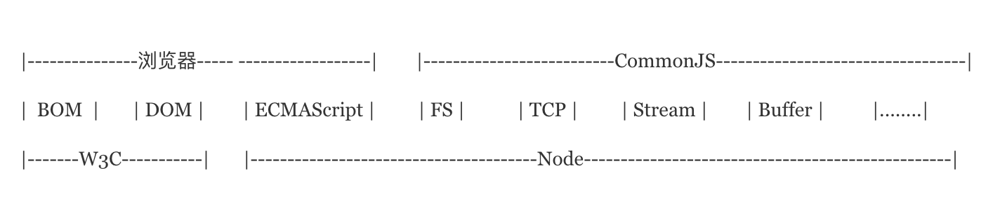
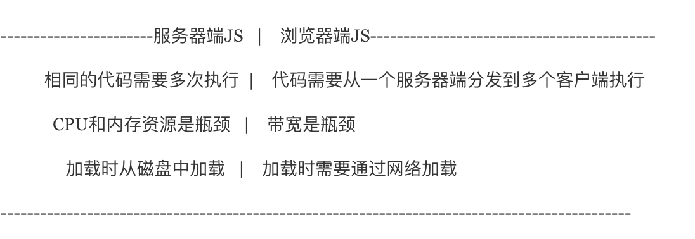

背景
历史上，JavaScript一直都没有模块（module）体系，这就导致了在大项目中无法拆分成互相依赖的小文件，再进行拼装。这对开发复杂的项目形成了巨大的障碍。
模块化概念
理想情况下，开发者只需要实现核心的业务逻辑，其他都可以加载别人已经写好的模块。
原始的写法
模块就是实现某个特定功能的方法，只要把不同的函数或变量放在一起就算是一个模块
1 | var _count = 0; |
这里的m1,m2方法组成了一个模块，使用的时候直接调用即可。但是这样很明显有一个缺点：“污染”全局变量，没有办法保证模块与模块之间不发生变量名或者方法名冲突，并且模块间与模块间并无法分清是否有直接联系。
对象写法
对于原始写法的缺点，将方法或者变量声明在某个对象中，像m1,m2函数都封装在对象体内，需要时再用对象进行调用。
1 | var module1 = { |
但是这样依然会有缺点：暴露出了模块的所有成员，内部状态可以被改写，比如内部_count变量会被外部直接改写。
立即执行函数写法
会涉及到闭包的概念，用‘立即执行函数’（Immediately-Invoked Function Expression，IIFE）即可以达到不暴露私有成员的目的。类似于jQuery的封装。
1 | var module1 = (function(){ |
CommonJS
CommonJS) 是以在浏览器环境之外构建 JavaScript 生态系统为目标而产生的项目，比如在服务器和桌面环境中。
2009年，美国程序员Ryan Dahl创造了node.js项目，将javascript语言用于服务器端编程。
这标志”Javascript模块化编程”正式诞生。前端的复杂程度有限，没有模块也是可以的，但是在服务器端，一定要有模块，与操作系统和其他应用程序互动，否则根本没法编程。
node编程中最重要的思想之一就是模块，而正是这个思想，让JavaScript的大规模工程成为可能。模块化编程在js界流行，也是基于此，随后在浏览器端，requirejs和seajs之类的工具包也出现了，可以说在对应规范下，require统治了ES6之前的所有模块化编程，即使现在，在ES6 module被完全实现之前，还是这样。

例如在Node中，Node 应用由模块组成，采用 CommonJS 模块规范。
每个文件就是一个模块，有自己的作用域。在一个文件里面定义的变量、函数、类，都是私有的，对其他文件不可见。
CommonJS规范规定，每个模块内部，module变量代表当前模块。这个变量是一个对象，它的·exports属性（即·module.exports）是对外的接口。加载某个模块，其实是加载该模块的·module.exports属性。
1 | //user.js |
上面代码通过module.exports输出变量expose_num和函数m1,m2,getCount。
require方法进行加载模块
1 | //main.js |
module.exports属性
module.exports属性表示当前模块对外输出的接口，其他文件加载该模块，实际上就是读取module.exports变量。
exports变量
为了方便，Node为每个模块提供一个exports变量，指向module.exports。这等同在每个模块头部，有一行这样的命令。
1 | var exports = module.exports; |
如果你觉得，
exports与module.exports之间的区别很难分清，一个简单的处理方法，就是放弃使用exports，只使用module.exports。es6中为
export,注意区分。
CommonJS模块的特点如下
- 所有代码都运行在模块作用域，不会污染全局作用域。
- 模块可以多次加载，但是只会在第一次加载时运行一次，然后运行结果就被缓存了，以后再加载，就直接读取缓存结果。要想让模块再次运行，必须清除缓存。
- 模块加载的顺序，按照其在代码中出现的顺序。
详细学习使用请参考链接：https://javascript.ruanyifeng.com/nodejs/module.html
AMD
有了服务器端的模块化后，很自然客户端也需要进行模块化，最好两者能够兼容，并且在服务器和浏览器都能够运行。也由于一个重大的局限，使得CommonJS规范不适用于浏览器环境上。

就例如上述中CommonJS中的案例代码，在未加载完第一行的require('./user.js')代码时，后面的module1.m1()等的方法都会进行等待第一行完成后才可以继续运行。这对服务端来说不是问题，因为所有的模块都存放在本地硬盘，没有网络等其他原因，可以很快的同步加载完成，只需要等待硬盘的读取时间。但是对于浏览器环境，却是一个很大的问题，因为所有的模块都放置于服务端，等待时间不是取决于硬盘，而是取决于网速的快慢，这就导致了可能会导致等待时间过长，导致浏览器出现’假死’状态。
因此浏览器端的模块不可以采用’同步加载’（synchronous），只能使用’异步加载’（asynchronous）。这就是AMD](https://github.com/amdjs/amdjs-api/wiki/AMD-(中文版))规范的诞生背景。
所谓AMD即Asynchronous Module Definition的缩写，意思就是’异步模块定义’。它采用异步方式加载模块，模块的加载不影响后面的语句的运行。所有依赖这个模块的语句，都定义在一个回调函数中，等到加载完成之后，这个回调函数才会运行。
该规范只定义了一个函数 define，它是全局变量。函数的描述为：
1 | define(id?, dependencies?, factory); |
- id：第一个参数，id，是个字符串。它指的是定义中模块的名字，这个参数是可选的
- dependencies：第二个参数，dependencies，是个定义中模块所依赖模块的数组
- factory：第三个参数，factory，为模块初始化要执行的函数或对象。
例如在RequireJS中，
RequireJS是一个工具库，主要用于客户端的模块管理。它可以让客户端的代码分成一个个模块，实现异步或动态加载，从而提高代码的性能和可维护性。它的模块管理遵守AMD规范（Asynchronous Module Definition）。
RequireJS的基本思想是，通过define方法，将代码定义为模块；通过require方法，实现代码的模块加载。
首先，将require.js嵌入网页，然后就能在网页中进行模块化编程了。
1 | <script data-main="app" src="https://requirejs.org/docs/release/2.3.6/comments/require.js"></script> |
上面代码的data-main属性不可省略，用于指定主代码所在的脚本文件，在上例中为当前目录下的app.js文件。用户自定义的代码就放在这个app.js文件中。
define方法：定义模块
- 独立模块
1 | //user.js |
另一种等价的写法是，把对象写成一个函数，该函数的返回值就是输出的模块。
1 | //user.js |
后一种写法的自由度更高一点，可以在函数体内写一些模块初始化代码。值得指出的是，define定义的模块可以返回任何值，不限于对象。
- 非独立模块
1 | //cart.js |
define方法的第一个参数是一个数组，它的成员是当前模块所依赖的模块。比如，[‘user’]表示我们定义的这个新模块依赖于user模块，只有先加载这两个模块，新模块才能正常运行。一般情况下，user模块指的是，当前目录下的user.js文件，等同于写成[’./user’]。
define方法的第二个参数是一个函数，当前面数组的所有成员加载成功后，它将被调用。它的参数与数组的成员一一对应，比如function(user)就表示，这个函数的第一个参数user对应user模块，以此类推。这个函数必须返回一个对象，供其他模块调用。
require方法：调用模块
require方法用于调用模块。它的参数与define方法类似。
1 | //app.js |
上面方法表示加载cart一个模块，当这一个模块都加载成功后，执行一个回调函数。该回调函数就用来完成具体的任务。而cart.getCartCount()和cart模块加载不是同步的，浏览器不会再发生假死状态，所以AMD规范更适合浏览器环境。
require方法也可以用在define方法内部，即动态加载。
define和require这两个定义模块、调用模块的方法，合称为AMD模式。它的模块定义的方法非常清晰，不会污染全局环境，能够清楚地显示依赖关系。
AMD模式可以用于浏览器环境，并且允许非同步加载模块，也可以根据需要动态加载模块。
详细学习使用请参考链接：https://javascript.ruanyifeng.com/tool/requirejs.html
AMD规范与CommonJS规范的兼容性
CommonJS规范加载模块是同步的，也就是说，只有加载完成，才能执行后面的操作。AMD规范则是非同步加载模块，允许指定回调函数。由于Node.js主要用于服务器编程，模块文件一般都已经存在于本地硬盘，所以加载起来比较快，不用考虑非同步加载的方式，所以CommonJS规范比较适用。但是，如果是浏览器环境，要从服务器端加载模块，这时就必须采用非同步模式，因此浏览器端一般采用AMD规范。
AMD规范使用define方法定义模块，下面就是一个例子：
1 | define(['package/lib'], function(lib){ |
AMD规范允许输出的模块兼容CommonJS规范，这时define方法需要写成下面这样：
1 | define(function (require, exports, module){ |
CMD
CMD 是 SeaJS 在推广过程中对模块定义的规范化产出。
首先通过 script 引入 sea.js 后，有一段配置代码：
1 | // seajs 的简单配置 |
sea.js 在下载完成后，会自动加载入口模块。页面中的代码就这么简单。
1 | define(id?, deps?, factory) |
- id：第一个参数，id，是个字符串。它指的是定义中模块的名字，这个参数是可选的
- deps：第二个参数，dependencies，是个定义中模块所依赖模块的数组
- factory：第三个参数，factory，为模块初始化要执行的函数或对象。
注意：带 id 和 dependencies 参数的 define 用法不属于 CMD 规范，而属于 Modules/Transport 规范。
如果一个模块不依赖其他模块，那么可以直接定义在define()函数之中。
1 | // 所有模块都通过 define 来定义 |
上面就是 Sea.js 推荐的 CMD 模块书写格式。如果你有使用过 Node.js，一切都很自然。
详细学习使用请参考链接：https://seajs.github.io/seajs/docs/#quick-start
AMD和CMD的区别
AMD和CMD最大的区别是对依赖模块的执行时机处理不同，而不是加载的时机或者方式不同，二者皆为异步加载模块。
AMD依赖前置，js可以方便知道依赖模块是谁，立即加载；
CMD就近依赖，需要使用把模块变为字符串解析一遍才知道依赖了那些模块。
AMD 的 API 默认是一个当多个用，CMD 的 API 严格区分，推崇职责单一。比如 AMD 里，require 分全局 require 和局部 require，都叫 require。CMD 里，没有全局 require，而是根据模块系统的完备性，提供 seajs.use 来实现模块系统的加载启动。CMD 里，每个 API 都简单纯粹。
CMD 推崇依赖就近，AMD 推崇依赖前置
RequireJS 从 2.0 开始，也改成可以延迟执行（根据写法不同，处理方式不同）。
1 | // CMD |
1 | // AMD 默认推荐的是 |
即使AMD也可以支持CMD的写法，因为define内部也可以使用require，前面有提到。但是RequireJS 的作者默认是最喜欢上面的写法，也是官方文档里默认的模块定义写法。
ES6 Module
ES6 模块的设计思想是尽量的静态化，使得编译时就能确定模块的依赖关系，以及输入和输出的变量。
export导出模块
模块功能主要由两个命令构成：export和import。export命令用于规定模块的对外接口，import命令用于输入其他模块提供的功能。
一个模块就是一个独立的文件。该文件内部的所有变量，外部无法获取。如果你希望外部能够读取模块内部的某个变量，就必须使用export关键字输出该变量。下面是一个 JS 文件，里面使用export命令输出变量。
1 | // profile.js |
export命令除了输出变量，还可以输出函数或类（class）。
import导入模块
使用export命令定义了模块的对外接口以后，其他 JS 文件就可以通过import命令加载这个模块。
1 | // main.js |
上面代码的import命令，用于加载profile.js文件，并从中输入变量。import命令接受一对大括号，里面指定要从其他模块导入的变量名。大括号里面的变量名，必须与被导入模块（profile.js）对外接口的名称相同。
export default默认导出
从前面的例子可以看出，使用import命令的时候，用户需要知道所要加载的变量名或函数名，否则无法加载。但是，用户肯定希望快速上手，未必愿意阅读文档，去了解模块有哪些属性和方法。
为了给用户提供方便，让他们不用阅读文档就能加载模块，就要用到export default命令，为模块指定默认输出。
1 | // export-default.js |
上面代码是一个模块文件export-default.js，它的默认输出是一个函数。
其他模块加载该模块时，import命令可以为该匿名函数指定任意名字。
1 | // import-default.js |
ES6中Module还有很多语法，这里主要讲解es6前js的模块化概念，所以不多概述使用，详细使用参考下面链接。
详细学习使用请参考链接：https://es6.ruanyifeng.com/#docs/module